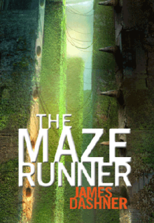

The following are books that you can rent.
39 Clues: The Maze of Bones

After their grandmother dies, Amy and Dan Cahill discover that they are part of the most powerful family in
history. The source of this power is hidden in 39 clues scattered around the world. Amy, Dan and other
Cahills are give a choice : Take a million dollars and walk away, or compete to find all the Clues. Teh
first Clue is somehow connected to Benjamin Franklin, but its location is a mystery.
The Maze Runner

When Thomas wakes up in the lift, the only thing he can remember is his name. He's surrounded by strangers
boys whose memories are also gone. Outside the towering stone walls that surround the Glade is a limitless,
ever-changing maze. It's the only way out and now one's ever made it through alive. Then a girl arrives.
The first girl ever. And the message she delivers is terrifying.
39 Clues: Into the gauntlet
Amy and Dan Cahill are in London on the last leg of the Clue hunt, investigating the lost years of William
Shakespeare. But as they close in on a shocking discovery, all the rules change. Who is an enemy and who is
a friend? With the fate of the world in their hands, Amy and Dan have to make devastating choices. A single
mistake could lead to fatal consequences and an unthinkable end to the hunt.
The Death Cure
WICKED has taken everything from Thomas: his life, his memories, and now his only friends the Gladers. But
it's finally over. The trials are complete, after one final test. What WICKED doesn't know is that Thomas
remembers far more than they think, And it's enough to prove that he can't believe a word of what they say.
Thomas beat the Maze. He survived the Scorch. He'll risk anything to save his friends. But the truth might
be what ends it all.